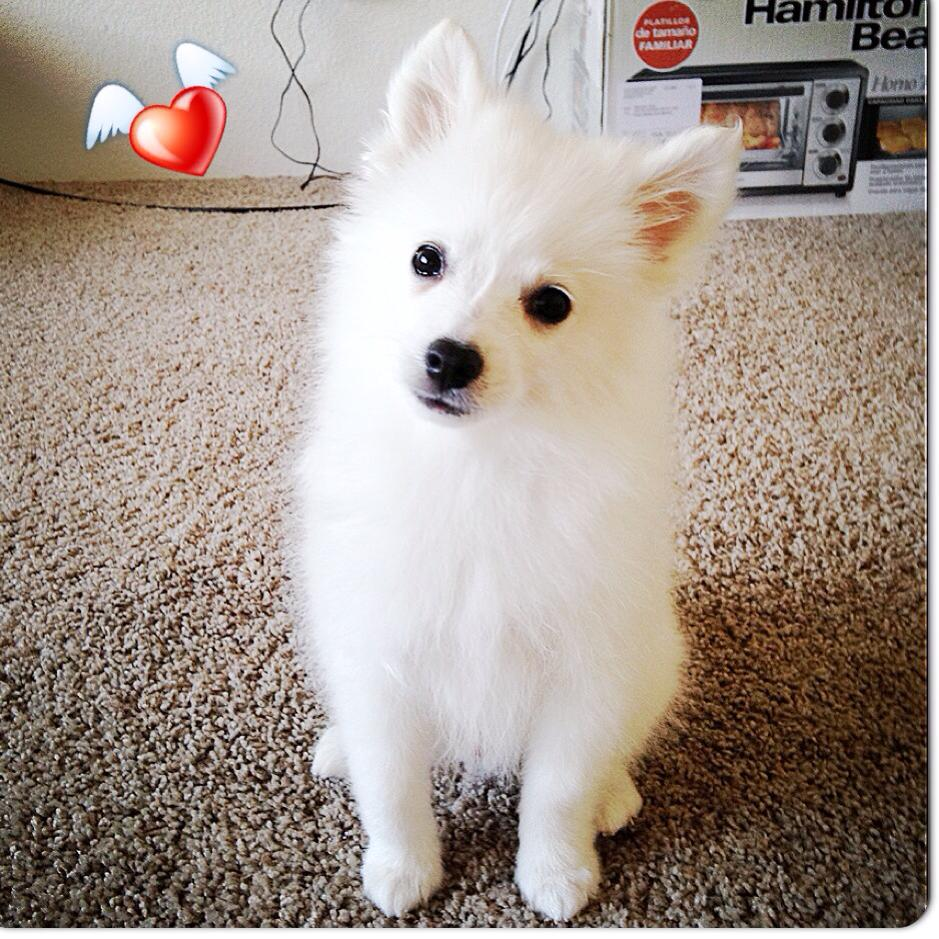

 The American Eskimo Dog is a breed of companion dog originating in Germany. The American Eskimo is a member of the Spitz family. Hypoallergenic: No Life span: 13 - 15 years Height: 15 - 20 in. (Standard Size) Mass: 18 - 35 lbs (Standard Size) Temperament: Intelligent, Reserved, Protective, Friendly, Alert Origin: United States of America, Germany
A Shih Tzu, also known as the Chrysanthemum Dog, is a toy dog breed, weighing 10–19 pounds when fully grown. The exact origins of the breed are unknown, but it is thought to have originated in Tibet and then been developed in China. Hypoallergenic: Yes Life span: 10 - 16 years Temperament: Playful, Affectionate, Lively, Outgoing, Loyal. Height: Female: 7.9 - 11 in. (Adult, At the withers), Male: 7.9 - 11 in. (Adult, At the withers) Mass: Female: 8.8 - 16 lbs (Adult), Male: 8.8 - 16 lbs (Adult) Origin: China, Tibet